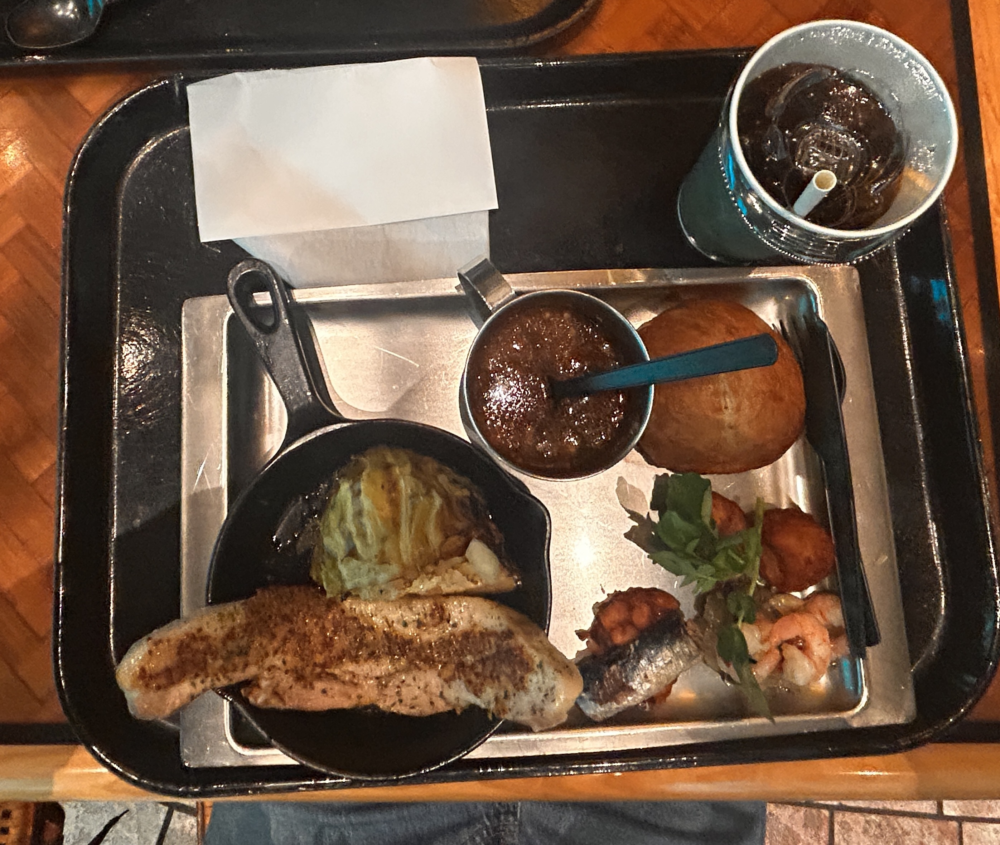

UNIVERSAL STUDIOS!
2026.05.10
Hello blog! Today, I went to Universal Studio’s with my Korean friend Hanni-san. I woke up at 5:30am, left at 7:30am, then came back at 8:00pm. That’s 12 hours I’ve been out for. I am so tired right now and I really need to sleep, but I have to keep up my streak of posting.
Quick recap of today at Universal Studios w/ Hanni-san:
- Went to Harry Potter land and did some magic
- Rode a terrifying Harry Potter rollercoaster (i was confused as how these tweens could defeat these literal demons.)
- Watched a 4d Jujitsu Kaisen movie (scary)
- Went to super Nintendo world where we played IRL Mario Kart.
- Ate at Jurassic Park cafeteria. We both got pork belly meal sets for a Jurassic 2800 yen ($17.88):

It looks like prison food. It was okay. The bread was really great (the Japanese have mastered the recipe for bread.) - Jurassic park ride that was basically Splash Mountain/Tiana’s Bayou Adventure.
- Went to Despicable Me land and rode some crazy ride where we trained to become minions.
- Walked through New York land
- Watched a 4d Conan movie, where there were three actors/actresses who performed in front of us. It was interesting.
- ZEDD THEMED RIDE WHERE THEY PLAYED ZEDD’S SONGS!!! (IT WAS THE BEST RIDE I HAD EVER GONE ON)
- Jaws ride where we watched our tour guide shoot the shark. It was not that scary.
- Watched some “rock” performance celebrating 25 years of Universal Studio Osaka featuring foreigners.
I’m sure there was more, but my brain has now shifted to the emergency energy reserve and can’t think right now. xfxxgfxfxfxfxgxgxvxxcxcxxxxxxxzzzdxdzzz
Hanni-san told me that 15 years ago, she watched Shrek in one of the 4d theaters. I thought it was still available, so I said “omg i want to go.” BTW, instead of “Shrek,” she says “shee-reh,” which was so kawaii. Instead of jaws, she said “joooe-su.” Instead of Jurassic park, it was “juu-rah-kipah-ku.” It was quite silly. Anyway, the Shrek exhibit was already gone, so half of the day, I was excited to go to Shrek land only to find out about this miscommunication. Can you imagine the magnitude of my disappointment? TRE-MEN-DOUS.
Lots of great things happened at the park today:
- Little girl began waving at me for no reason, and I waved back. She was so cute.
- Saw the most gorgeous woman I had ever seen in my life. I think she was supposed to be Shrek’s wife Fiona before she turned.
- When I bought a little plushy, the shopkeeper told me that my hat was so cute. I told her that I love corn tea, even showing photo proof. She then asked me if I was Japanese maybe because of my look or how good my Japanese is. Whatever it was, I was quite flattered.
- Had nice convo’s with Hanni-san
- ZEDD REMIX RIDE!!! (OMG THE BEST RIDE EVER!!! I’m buying first class tickets for my entire family just so we can ride it all together.) We were gonna go on it again, it was so fun.
- Hanni-san gifted me shrimp chips !! (THANK YOU, HANNI-SAN!)
Okay, I genuinely need to sleep now. I can actually feel my brain about shut down and it’s a little scary. I’ll show you photos tomorrow. じゃね！